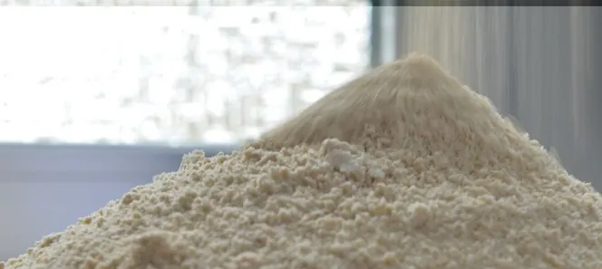
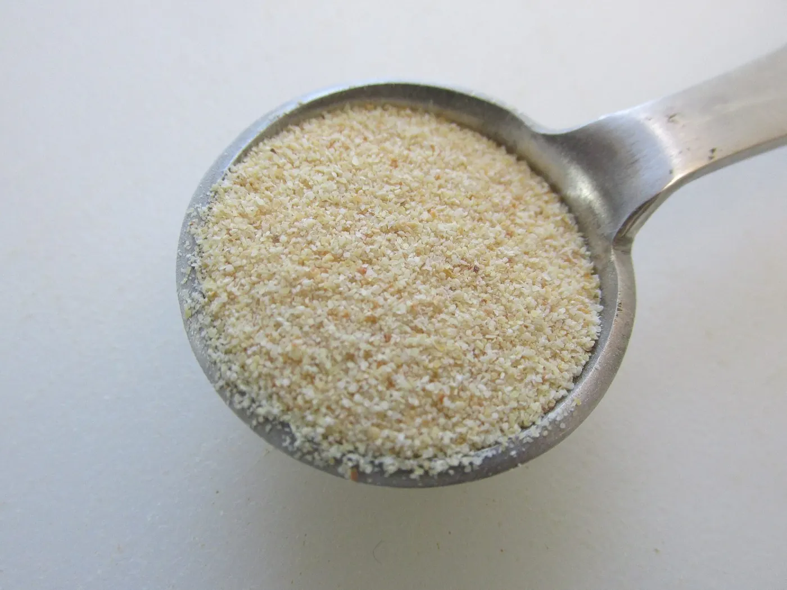
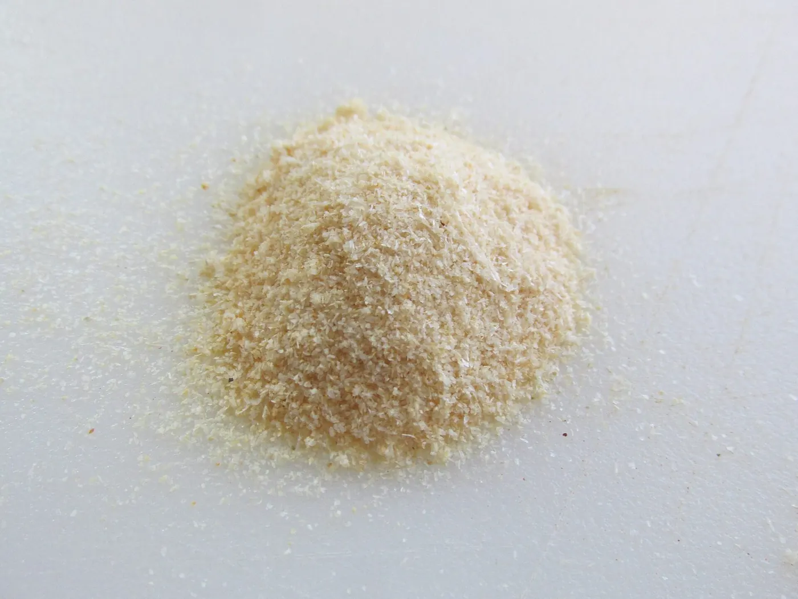
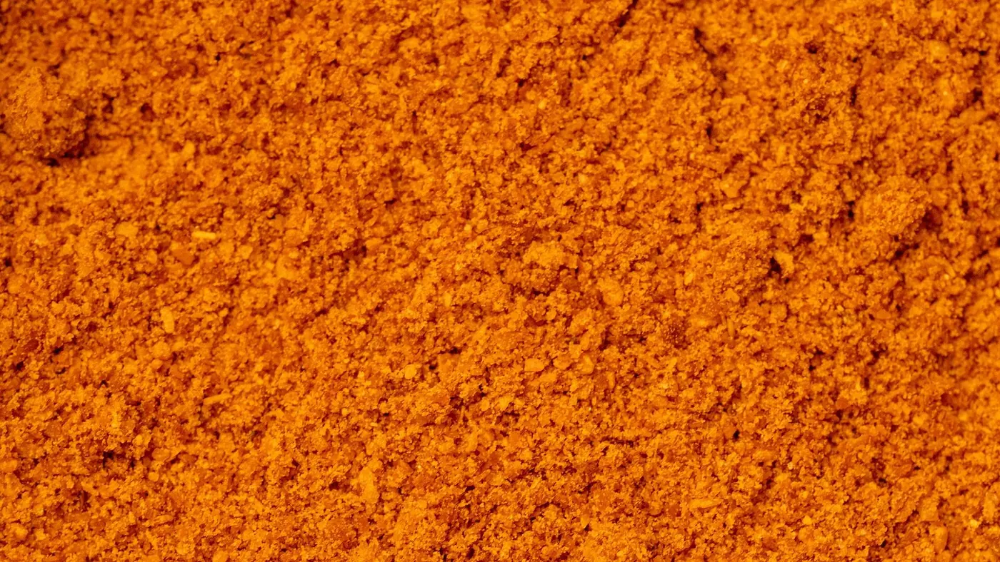
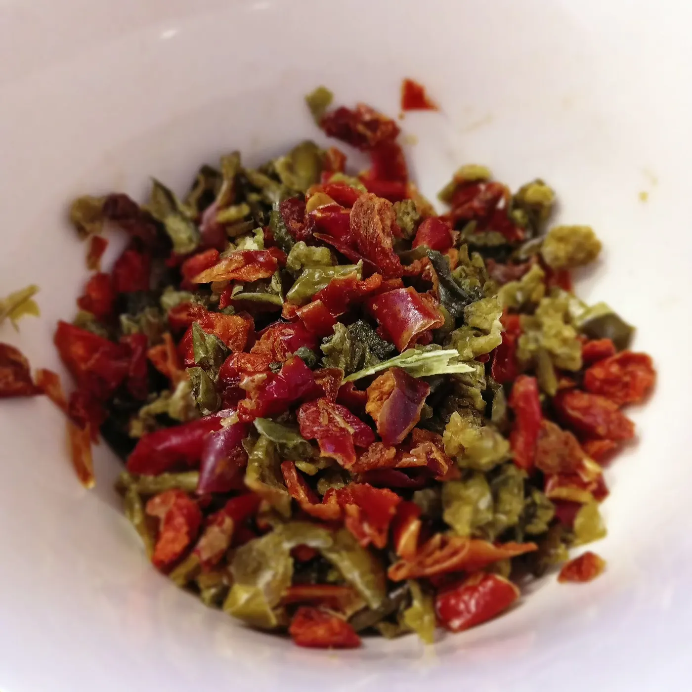
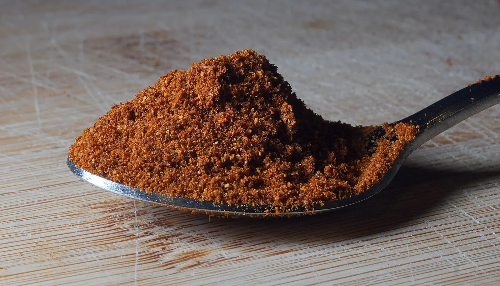
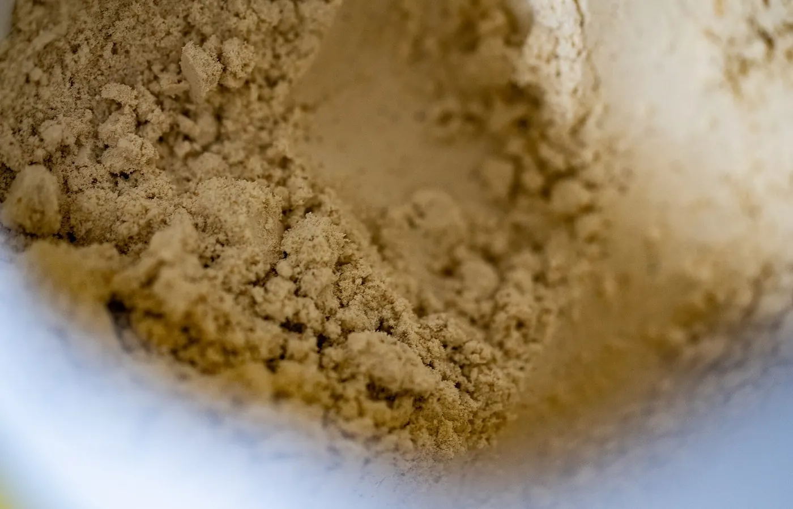
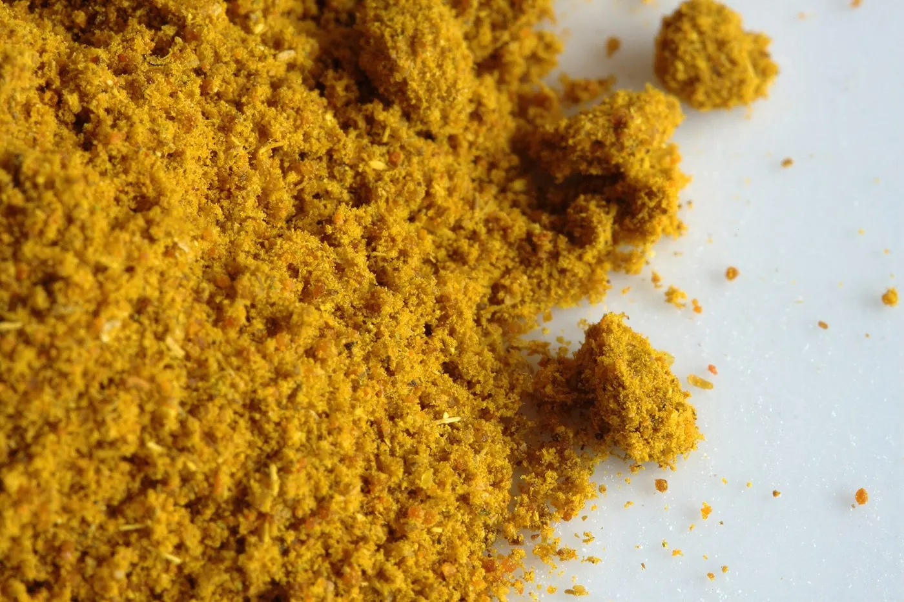

Mischen von Pulvern und Zutatenin Neuburg an der Donau
Wir verarbeiten vorgefertigte Mischungen und bieten verschiedene technische Mischvorgänge an, als ersten Schritt vor dem Pressen oder Abfüllen.
Fertig gemischt oder bei uns gemischt.
Wählen Sie, wie Ihre Rohstoffe bei uns ankommen.
Wie kommt das Material an?
Pulver, Granulate, Zutaten.








Fragen zum Mischen.
Was Kunden vor dem ersten Mischauftrag wissen wollen.
Ihre Frage steht nicht dabei?
08431 61 81 80Wir verarbeiten vorgefertigte Mischungen und bieten verschiedene technische Mischvorgänge an. Rezeptur und Rohstoffe kommen von Ihnen, der Mischvorgang läuft bei uns.
Die Mischung geht weiter zum Kompaktieren oder direkt zum Abfüllen. Beides passiert im selben Haus, ohne Transport dazwischen.
Was davor und danach passiert.
Werkzeuge und Formen aus der Technik stehen vor der Mischung. Die fertige Mischung geht ins Kompaktieren.
Was soll gemischt werden?
Nennen Sie uns Zutaten, Menge und den nächsten Schritt. Wir planen den passenden Mischvorgang.
- 01Anfrage per Formular, Mail oder Telefon
- 02Gespräch über Produkt, Menge und Verpackung
- 03Erste Muster, dann die Serie